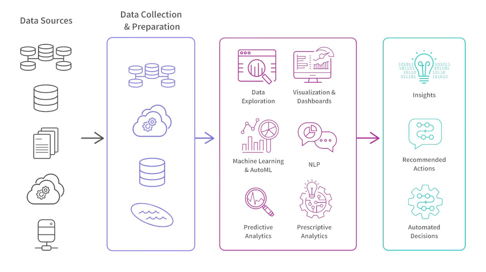
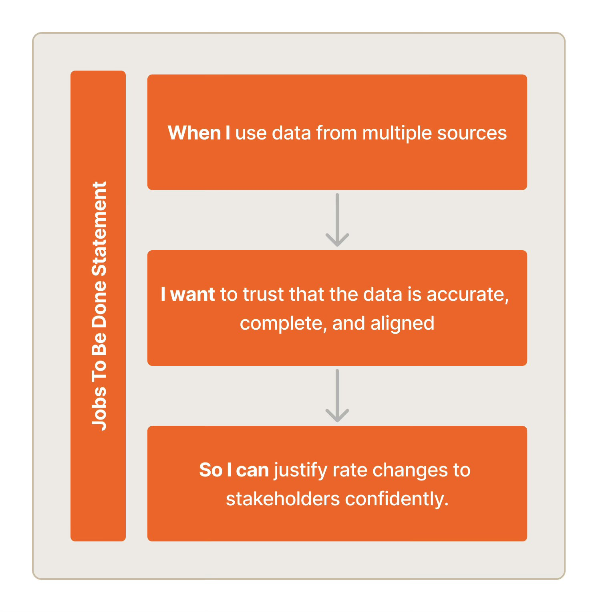
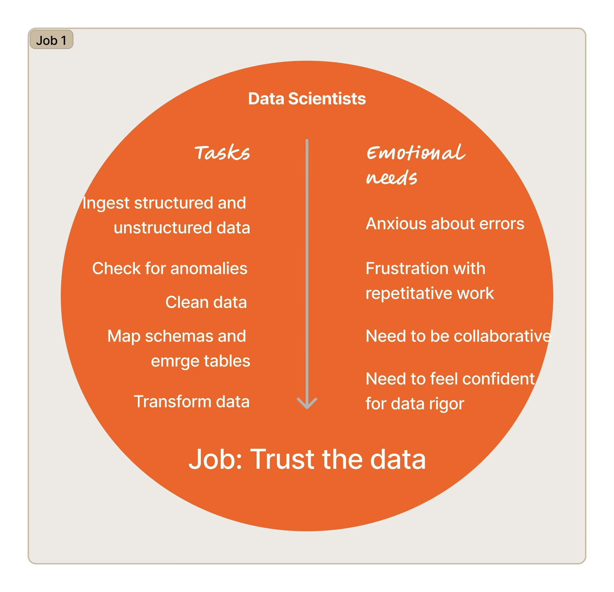
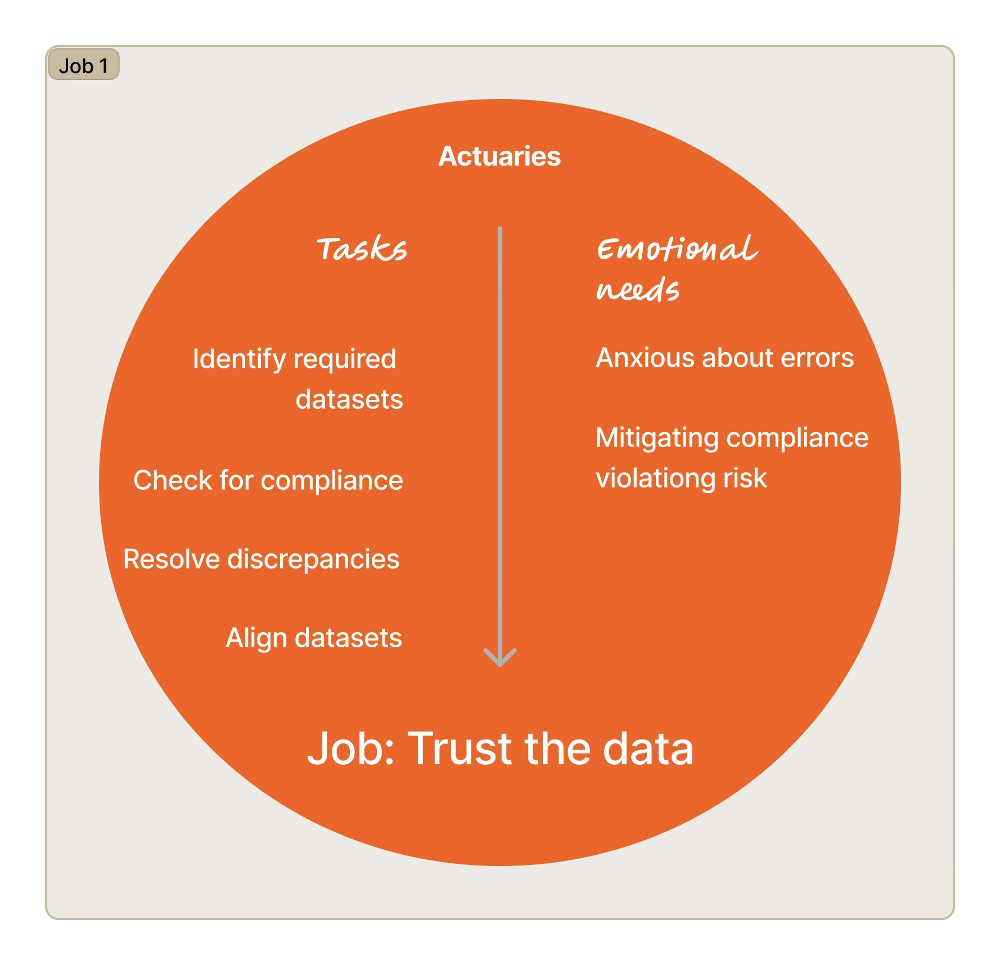
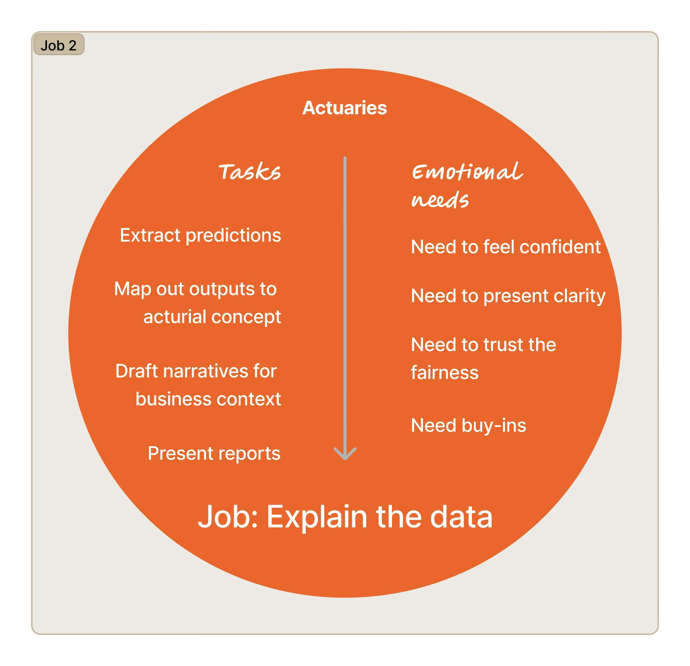

A healthcare AI platform was generating real value for actuaries and data scientists — but every meaningful interaction required hand-holding from internal data scientists. That wasn't a product, it was a service. I ran end-to-end JTBD research to understand what expert users actually needed to operate independently, and translated those findings into a product strategy that shifted the company's roadmap toward self-sufficiency.
The platform processed healthcare data from hospital networks and insurance carriers to generate premium predictions via a predictive analytics algorithm. For actuaries and data scientists, this had genuine value — faster modeling, more data inputs than manual methods could handle.
But there was a structural problem. Every time a user needed to act on a prediction, they needed to understand how the algorithm reached it. Not because they doubted the output — but because their professional role required them to explain and defend it. Actuaries report to regulators. Data scientists present to executives. "The algorithm said so" is not a defensible answer in either context.
Without explainability built into the platform, users fell back on internal data scientists to interpret outputs. The product was dependent on a support layer that was expensive, unscalable, and fundamentally incompatible with a self-serve product model. The business goal was clear: reduce that dependency. The research question was: what exactly was creating it?

The platform's analytics interface — where expert users needed to trust, interrogate, and explain algorithm outputs their professional role required them to defend.
Expert users rely on internal data scientists to interpret algorithm outputs, configure data pipelines, and bridge collaboration gaps — making every meaningful use of the platform a consulting engagement
Expert users can trust the data, interrogate the algorithm's reasoning, and collaborate cross-functionally inside the platform — operating independently without internal support
The team's instinct going into this research was to ask: what features are missing? But that framing assumed the problem was feature gaps. The research needed to answer a different question: what are these expert users actually trying to accomplish in their professional workflow, and where does the platform fail to serve those jobs?
JTBD was the right framework because actuaries and data scientists brought strong, established professional practices to the tool. They weren't building new habits — they were trying to fit the platform into existing workflows with real professional stakes attached. Mapping their jobs before evaluating features meant the team would understand what self-sufficiency actually required, not just what users complained about.
Before scoping the research I met with the PM, designer, front-end developer, data scientists, and data engineers to surface their assumptions and align on the decisions the research needed to support. That conversation shaped the research objectives and ensured findings would map to decisions the team was ready to make.

JTBD framework — mapping functional jobs, emotional needs, and professional stakes alongside workflow steps for each user role.
Semi-structured interviews and observational studies with actuaries and data scientists — two distinct user roles with different jobs, different professional accountabilities, and different relationships with the platform's outputs. Participants walked through live prediction workflows while verbalizing their reasoning, surfacing the gap between what the platform provided and what their jobs required. Usability testing ran post-design-change to validate improvements. Secondary study on predictive analytics in healthcare provided domain context before fieldwork began.
Thematic Analysis — Identifying patterns and themes across both user roles
Affinity Mapping — Clustering user insights by job, motivation, and friction point
User Journey Mapping — Tracking the full prediction workflow step by step, surfacing exactly where and why users needed internal support



Findings were structured around the jobs users needed to complete — not the features they mentioned. Each job surfaced a specific gap between what the platform provided and what self-sufficient operation required.
The platform ingested data from electronic health records and insurance claims systems that frequently had mismatches, gaps, and inconsistencies. Before data scientists could run a single prediction, they needed to manually audit and clean the inputs. This wasn't an edge case — it was the dominant activity in their workflow. A platform that required most of a user's time on infrastructure rather than analysis could not be a self-serve product; it was a data-engineering project with a UI on top.
This finding repositioned data pipeline automation from a future improvement to a prerequisite for productization. Until users could trust the data without manual intervention, everything else in the platform was downstream of a problem the product wasn't solving.
Automate data pipelines; build a dashboard that surfaces data health status before users begin modelingActuaries don't just use predictions — they present them to executives and regulators who demand to know how a number was reached. In a regulated industry, an unexplained output isn't just frustrating; it's unusable.
The platform's algorithm produced accurate predictions but gave users no window into its reasoning. Every time an actuary needed to report on a result, they went back to internal data scientists to reconstruct the logic. This was the single largest driver of consulting dependency — not a feature gap, but a fundamental mismatch between what the algorithm output and what professional accountability required.
Refining premium predictions required actuaries and data scientists to align on assumptions, share results, and track changes across teams. None of this happened inside the platform.
When collaboration falls back to email and spreadsheets, the platform has effectively been abandoned for the most consequential part of the workflow. A self-serve product has to support the full job — including the handoffs. A tool that handles analysis but not collaboration will always require a workaround layer.
Introduce collaboration hubs — shared workspaces with version tracking that replace the email-and-spreadsheet layerThe findings produced three concrete shifts in how the team understood the product and what it needed to become.
Before this research, data pipeline automation was a background infrastructure concern. Surfacing that it consumed ~70% of users' working time repositioned it as the most urgent investment — the blocker behind which everything else was stuck. The team shifted roadmap priority accordingly.
The JTBD mapping surfaced that actuaries and data scientists had fundamentally different jobs within the same platform. Actuaries needed explainability for external reporting. Data scientists needed data trust for internal modeling. The research gave the team a framework for role-specific decisions that reduced guesswork and rework in future product cycles.
The research established a foundation that shaped future algorithm-related design decisions: the platform's success should not be measured by prediction accuracy alone, but by whether expert users can interrogate, explain, and act on those predictions independently. This principle became the team's reference point for evaluating future feature work.
"The best algorithm for expert users in regulated industries isn't the most accurate — it's the one that makes experts more capable of doing their most accountable work."
The most important decision in this project was choosing JTBD over a feature audit. The team arrived with hypotheses about missing features. The research revealed that the barriers to self-sufficiency weren't feature gaps — they were structural mismatches between what the platform provided and what professional accountability required. A feature audit would have produced a different list and a different roadmap. The framework choice changed the direction of the work.
The JTBD research established clear priorities, but without measuring users' perceived importance of each job across a larger sample, roadmap prioritization rests on qualitative signal alone. I'd follow up with a quantitative study measuring perceived importance across user roles — both to stress-test the priorities and to give leadership a statistical basis for sequencing a phased rollout of new features.